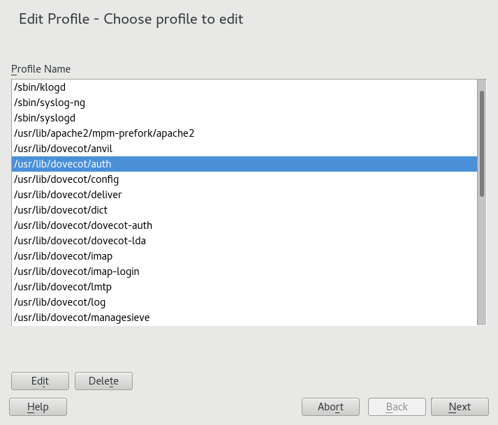
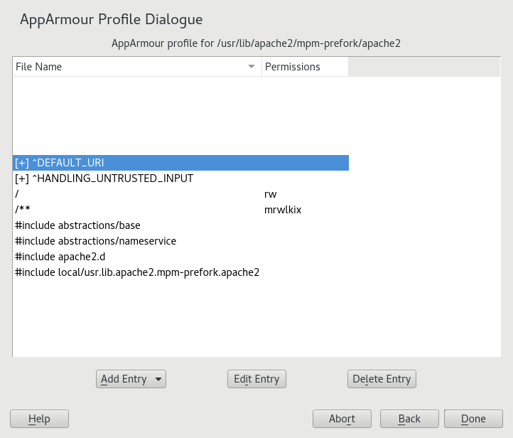
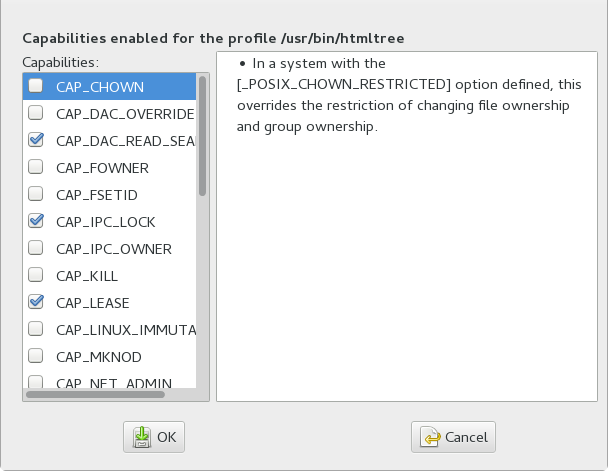

36.2. Editing profiles
YaST offers basic manipulation for AppArmor profiles, such as creating or editing.
However, the most straightforward way to edit an AppArmor profile is to use a text
editor such as vi:
>sudo vi /etc/apparmor.d/usr.sbin.httpd2-preforkThe vi editor also includes syntax (error) highlighting and syntax error highlighting, which
visually warns you when the syntax of the edited AppArmor profile is wrong.
AppArmor enables you to edit AppArmor profiles manually by adding, editing or deleting entries. To edit a profile, proceed as follows:
-
Start YaST, select , and click in the main window.

-
From the list of profiled applications, select the profile to edit.
-
Click . The window displays the profile.

-
In the window, add, edit, or delete AppArmor profile entries by clicking the corresponding buttons and referring to the section called “Adding an entry”, the section called “Editing an entry”, or the section called “Deleting an entry”.
-
When you are finished, click .
-
In the pop-up that appears, click to confirm your changes to the profile and reload the AppArmor profile set.
AppArmor contains a syntax check that notifies you of any syntax errors in profiles
you are trying to process with the YaST AppArmor tools. If an error occurs, edit the
profile manually as root and reload the profile set with systemctl reload apparmor.
36.2.1. Adding an entry
The button in the lists types of entries you can add to the AppArmor profile.
From the list, select one of the following:
- File
-
In the pop-up window, specify the absolute path of a file, including the type of access permitted. When finished, click .
You can use globbing if necessary. For globbing information, refer to the section called “Profile names, flags, paths, and globbing”. For file access permission information, refer to the section called “File permission access modes”.
- Directory
-
In the pop-up window, specify the absolute path of a directory, including the type of access permitted. You can use globbing if necessary. When finished, click .
For globbing information, refer to the section called “Profile names, flags, paths, and globbing”. For file access permission information, refer to the section called “File permission access modes”.
- Network rule
-
In the pop-up window, select the appropriate network family and the socket type. For more information, refer to the section called “Network access control”.
- Capability
-
In the pop-up window, select the appropriate capabilities. These are statements that enable each of the 32 POSIX.1e capabilities. Refer to the section called “Capability entries (POSIX.1e)” for more information about capabilities. When finished making your selections, click .

- Include file
-
In the pop-up window, browse to the files to use as includes. Includes are directives that pull in components of other AppArmor profiles to simplify profiles. For more information, refer to the section called “Include statements”.
- Hat
-
In the pop-up window, specify the name of the subprofile (hat) to add to your current profile and click . For more information, refer to Chapter 38, Profiling your Web applications using ChangeHat.
36.2.2. Editing an entry
When you select , a pop-up window opens. From here, edit the selected entry.
In the pop-up window, edit the entry you need to modify. You can use globbing if necessary. When finished, click .
For globbing information, refer to the section called “Profile names, flags, paths, and globbing”. For access permission information, refer to the section called “File permission access modes”.
36.2.3. Deleting an entry
To delete an entry in a given profile, select . AppArmor removes the selected profile entry.